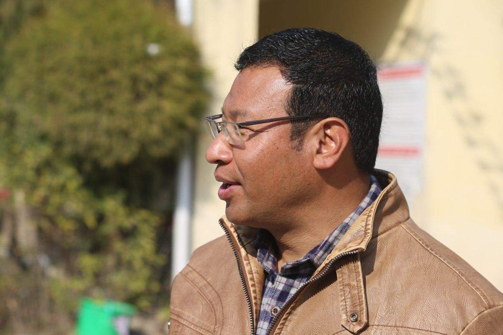

The Vanity of Survival
How we survive? You have a leisure life or you are out of rest, you are looking for job or you have understood the routined life, you do some manual work or you are chair-person, you are looking for better job or you have earned enough, you are rich or begging each day…….however the way you are leading your life is just a vain when you meditate for a few minutes. The simple fact –you have death following every second. The life is quite uncertain. We have diseases almost everywhere. My brother, as everyone said- had built up a successful career…nasty surprise he met a road accident. Only sometimes his memoire- in routined way as if it’s compulsory. She bore so many hardships in life to be somebody – few days ago she had had a heart attack….yes we have been bearing such fates….But “Bravo” humans - you have been tolerating these fates; and suffering for betterment. So there we see the human tales of Greatness. What is Greatness..? P. N. Shah was great but aren’t there questions about his greatness! Buddha...well there are more Hindus in his own kingdom! Four great Martyrs...now there are thousands...Madan Bhandari was there –once upon a time, Girija..It’s better he’s gone, Prachanda...no more belief on him. So, in fact none is really ready to accept their greatness and you can go on arguing. Some may favor Hitler, Mussolini, Stallion or Marxism or Plato, Socrates or George Washington and other politicians, others may argue the scientists are everything and some may give high position to litterateurs and so on..It seems that everything is there for us to talk about and spend time. There is nothing importance about anything and anyone. It’s just a vanity- an inevitable illusion, which has become weapon to show your superiority upon others.
You are superior than others just because you know some more vain things than others. You are lawyer because people are engaged in vain arguments. You are doctors because people believe in survival of a vain life. You are a teacher because people don’t know about the vain burden you impose upon children and so on. In nut shell, Life doesn’t really seem to be so much valuable. One can easily feel the emptiness of life if s/he looks around the tragedies of life.
But, I don’t mean to say- give up life. But I mean to say therefore that you need to free yourself from any bondage. Lead your life quite unrestrained. Just free yourself from everything. Don’t remain under pressure. The idea is that you won’t hesitate to raise yourself up if you think you can and you have to. Then there is no necessary to show your anger / unhappiness or enmity when you realize that it’s vain in doing these things. We debate on vain things. We have made our place narrow to live in. We don’t really need to think as helpless, poor, out of chance and so on..You accept the reality and can decide to live as per your wish. We do survive though we realize the vanity of earthly gains because we can’t escape away from the ugly realities. That’s why we are mostly dissatisfied and miserable. Is there really vanity in Survival?......
